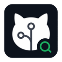

taskforcesh/bullmq
Redis-backed queues with strong docs, active releases, and mature ecosystem signals.
94/100

GitHub Search MCPFind repositories, inspect license risk, compare candidates, and turn dependency research into structured MCP output without leaving your client.
Redis-backed queues with strong docs, active releases, and mature ecosystem signals.
Established queue package with broad adoption, but lower recent maintenance velocity.
Simple Redis queue with smaller surface area and higher maintenance risk.
The pitch explains the project and the setup walkthrough shows the user path from install command to MCP client configuration, repository search, comparison, and integration notes.
What GitHub Search MCP is and why it improves repository decisions.
Install, MCP client config, search, compare, and generate integration notes.
Search starts broad, then the MCP server narrows each candidate with structured signals your agent can use.
01
Query GitHub repositories by intent, language, topics, stars, freshness, and license needs.
02
Read repository metadata, README content, file trees, package signals, docs, and license data.
03
Rank candidates with explainable scoring for maintenance, adoption, documentation, and risk.
04
Generate concise integration notes with install commands, key files, usage steps, and caveats.
The package runs over stdio by default, works with any MCP-compatible client, and uses a token only when you want higher GitHub API limits.
# Run without installing
npx github-search-mcp
# Optional: higher GitHub rate limits
GITHUB_TOKEN=ghp_xxx npx github-search-mcp
# MCP client entry
{
"mcpServers": {
"github-search": {
"command": "npx",
"args": ["-y", "github-search-mcp"]
}
}
}
The public product is GitHub Search MCP. The MCP tool prefix remains
oss_ for compatibility with the tested API contract.
oss_search_repositories
Find repositories by query and filters.
oss_analyze_repository
Profile license, docs, package health, maintenance, and risk.
oss_compare_repositories
Rank several candidates with explainable scoring.
oss_generate_integration_notes
Create practical adoption notes for the selected repository.